Contents
close all, clear, clc mainpath = 'C:\Users\74147\OneDrive\Documents\MATLAB\EOG-Project-Code-main\Data\EOG_Recording\'; addpath(mainpath); addpath('C:\Users\74147\OneDrive\Documents\MATLAB\EOG-Project-Code-main\THIRDEYE\Code') NumFile = 4; LinedupResultSum = []; for i = 1:NumFile
Document = i;% 3 is the best data we have for now switch Document case 1 EOGFilename= [mainpath 'BYB_Recording_2024-10-03_14.14.23.wav']; LabelFilename = [mainpath 'BYB_Recording_2024-10-03_14.14.23-events.txt']; case 2 EOGFilename= [mainpath 'BYB_Recording_2024-10-03_14.12.49.wav']; LabelFilename = [mainpath 'BYB_Recording_2024-10-03_14.12.49-events.txt']; case 3 EOGFilename= [mainpath 'BYB_Recording_2024-10-03_14.07.24.wav']; LabelFilename = [mainpath 'BYB_Recording_2024-10-03_14.07.24-events.txt']; case 4 EOGFilename= [mainpath 'BYB_Recording_2024-10-03_14.03.33.wav']; LabelFilename = [mainpath 'BYB_Recording_2024-10-03_14.03.33-events.txt']; end Angles = [0 10 -10 20 -20 30 -30 40 -40 50 -50 -10 10 -20 20 -30 30 -40 40 -50 50]; Events = AngleLiner(LabelFilename,Angles); [EOGsignal, fs]= audioread(EOGFilename);
Warning: Column headers from the file were modified to make them valid MATLAB identifiers before creating variable names for the table. The original column headers are saved in the VariableDescriptions property. Set 'VariableNamingRule' to 'preserve' to use the original column headers as table variable names. Hmmm We get less marker than we should
Warning: Column headers from the file were modified to make them valid MATLAB identifiers before creating variable names for the table. The original column headers are saved in the VariableDescriptions property. Set 'VariableNamingRule' to 'preserve' to use the original column headers as table variable names. Hmmm We get less marker than we should
Warning: Column headers from the file were modified to make them valid MATLAB identifiers before creating variable names for the table. The original column headers are saved in the VariableDescriptions property. Set 'VariableNamingRule' to 'preserve' to use the original column headers as table variable names. That looks about right
Warning: Column headers from the file were modified to make them valid MATLAB identifiers before creating variable names for the table. The original column headers are saved in the VariableDescriptions property. Set 'VariableNamingRule' to 'preserve' to use the original column headers as table variable names. Hmmm We get less marker than we should
Downsample
Downsamplefactor = 130; DSEOGsignal = downsample(EOGsignal,Downsamplefactor); % fs = 10000 Hz downsample by 100 time so DSTime = [0+Downsamplefactor/fs:Downsamplefactor/fs:Downsamplefactor/fs*length(DSEOGsignal)]; Time = [0+1/fs:1/fs:1/fs*length(EOGsignal)]; figure; s1= subplot(2,1,1); plot(DSTime,DSEOGsignal); xlabel('Time (s)') ylabel('EOG signal (Unit tmd)') title('Down Sampled Version (100 Hz)') s2 = subplot(2,1,2); plot(Time,EOGsignal); xlabel('Time (s)') ylabel('EOG signal (Unit tmd)') title('Original Signal (10000 Hz)') linkaxes([s1,s2]) disp('Downsampling to 100 Hz looks fine,(Filtered from 9 to 22 so twice the Nyquist Frequency)')
Downsampling to 100 Hz looks fine,(Filtered from 9 to 22 so twice the Nyquist Frequency)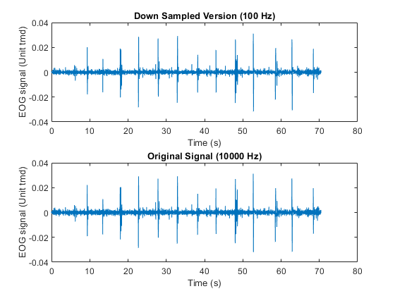
Downsampling to 100 Hz looks fine,(Filtered from 9 to 22 so twice the Nyquist Frequency)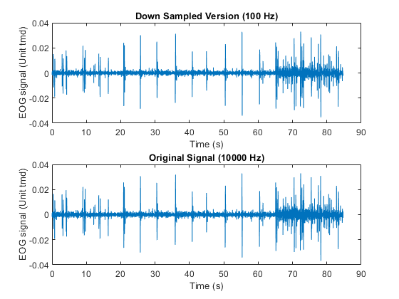
Downsampling to 100 Hz looks fine,(Filtered from 9 to 22 so twice the Nyquist Frequency)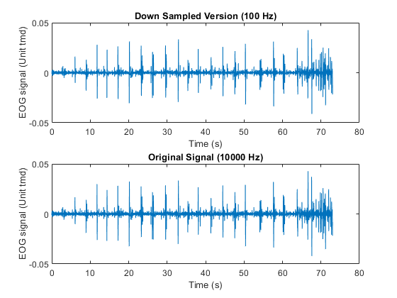
Downsampling to 100 Hz looks fine,(Filtered from 9 to 22 so twice the Nyquist Frequency)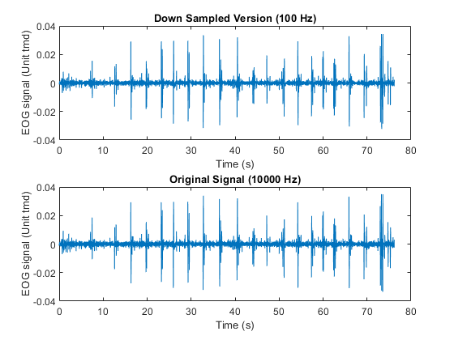
Step 3: Plot the audio signal
eventTimes = Events(:,2); eventIDs = Events(:,1); EyeAngle = Events(:,3); timeAxis = DSTime; % Time axis for the audio data figure; plot(timeAxis, DSEOGsignal); xlabel('Time (s)'); ylabel('Amplitude'); title('Audio Signal with Event Markers'); hold on; % Step 4: Overlay event markers for i = 1:length(eventTimes) % Plot each event with a different color or marker if eventIDs(i) == 1 plot(eventTimes(i), 0.1/2, 'k*', 'MarkerSize', 12, 'DisplayName', 'Event 1','MarkerFaceColor','k'); elseif eventIDs(i) == 3 plot(eventTimes(i), 0.1/2, 'ro', 'MarkerSize', 12, 'DisplayName', 'Event 3','MarkerFaceColor','r'); elseif eventIDs(i) == 2 plot(eventTimes(i), 0.1/2, 'go', 'MarkerSize', 12, 'DisplayName', 'Event 2','MarkerFaceColor','g'); end end legend('EOGsignal','Center','Looking Right','Looking Left'); hold off;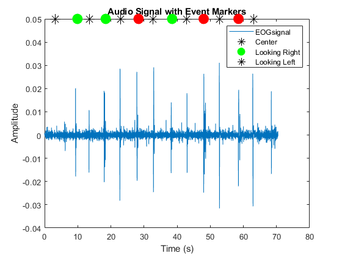 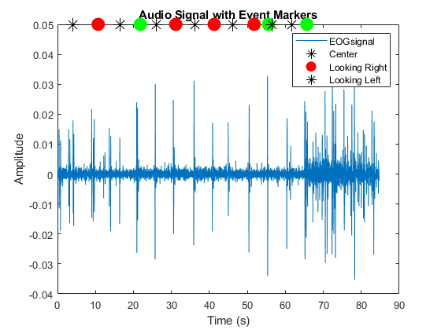 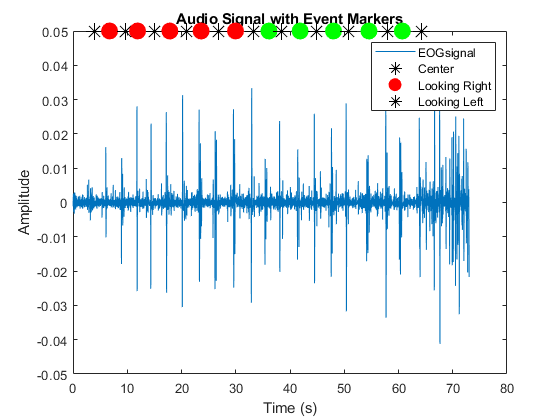 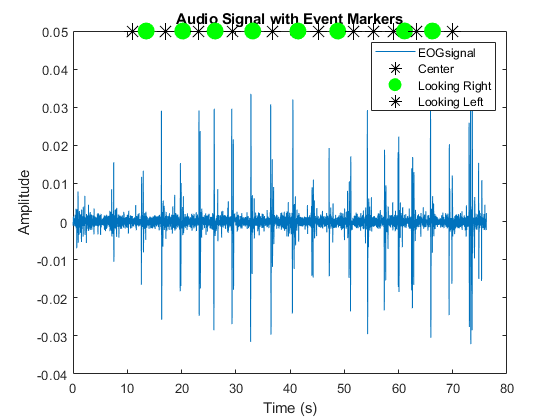
Event-Centered Analysis
fs = 10000; % Parameters window = 0.5; % Time window around each event in seconds numEvents = length(eventTimes); fs= fs/Downsamplefactor; % Define the number of rows and columns for the grid rows = 4; % Number of rows per figure cols = 3; % Number of columns per figure segmentsPerFigure = rows * cols; % Create figures based on the number of events numFigures = ceil(numEvents / segmentsPerFigure); PeakEOGValue = zeros(1,length(eventIDs)); PeakEOGTime = zeros(1,length(eventIDs)); for figIdx = 1:numFigures figure; sgtitle(['Audio Segments around Events - Figure ' num2str(figIdx)]); % Determine the range of events to plot in this figure startIdx = (figIdx - 1) * segmentsPerFigure + 1; endIdx = min(figIdx * segmentsPerFigure, numEvents); for i = startIdx:endIdx subplot(rows, cols, i - startIdx + 1); % Determine start and end times for each segment startTime = max(eventTimes(i) - window, 0); endTime = min(eventTimes(i) + window, timeAxis(end)); segmentIdx = round([startTime, endTime] * fs); EOGSegment = DSEOGsignal(segmentIdx(1):segmentIdx(2)); segmentTimeAxis = (segmentIdx(1):segmentIdx(2)) / fs; [ampmax,locsmax]=max(EOGSegment); [ampmin,locsmin]=min(EOGSegment); if abs(ampmax) > abs(ampmin) amp = ampmax; locs = locsmax; else amp = ampmin; locs = locsmin; end PeakEOGValue(i)= amp; PeakEOGTime(i)=segmentTimeAxis(locs); % Plot the segment plot(segmentTimeAxis, EOGSegment); xlabel('Time (s)'); ylabel('Amplitude'); title(['Event ' num2str(eventIDs(i))]); end end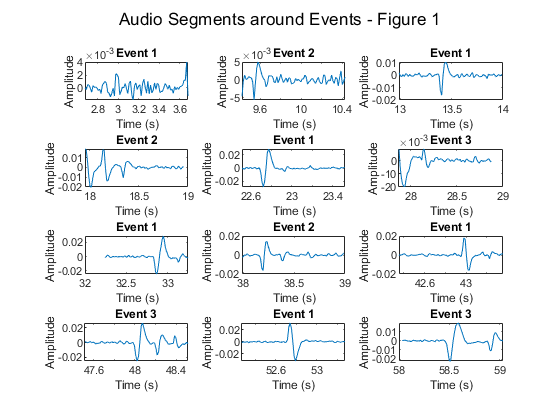 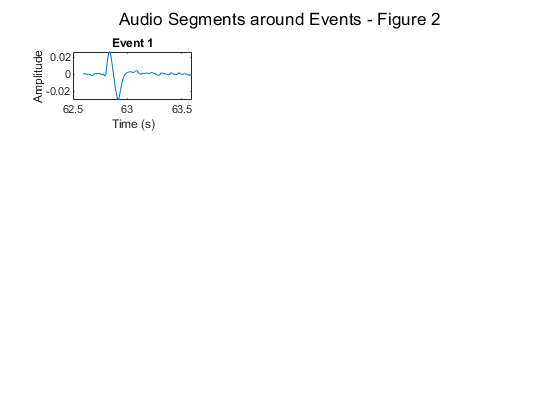 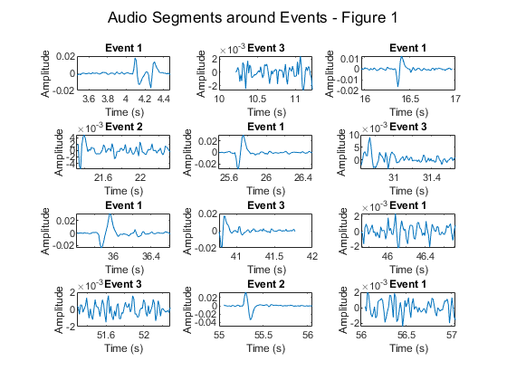 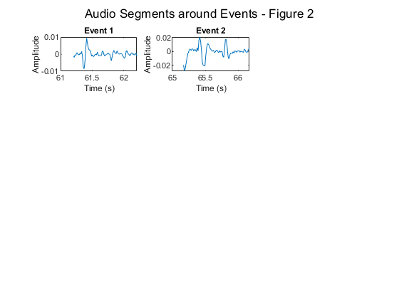 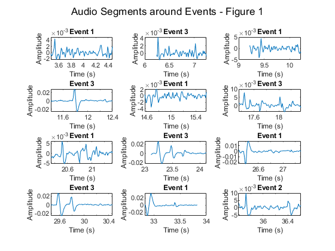 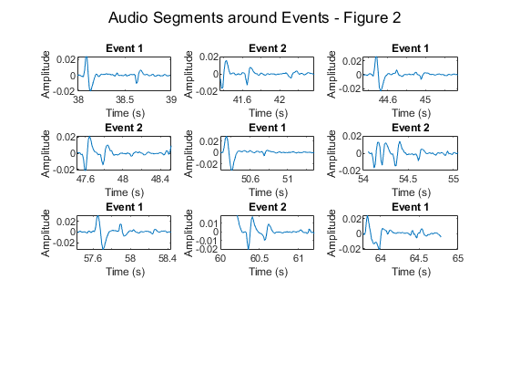 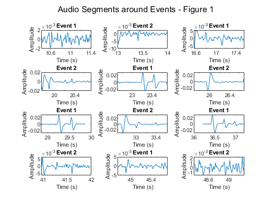 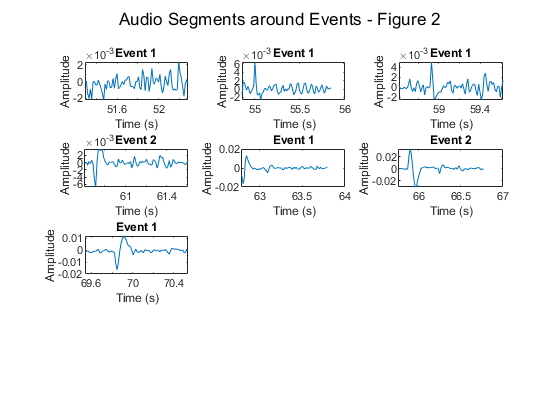
Labelandpeakdifference = Events(:,2)-PeakEOGTime';
LinedupResult = [Events PeakEOGTime' PeakEOGValue' Labelandpeakdifference];
LinedupResultSum = [LinedupResultSum;LinedupResult];
close all
end
degreeofpolyfit = 5; Model = polyfit(LinedupResultSum(:,5),LinedupResultSum(:,3),degreeofpolyfit) x_fit = linspace(-50,50,10000); y_fit = polyval(Model,x_fit); figure; hold on; % Plot original data points plot(LinedupResultSum(:,5),LinedupResultSum(:,3), 'bo', 'MarkerSize', 8, 'DisplayName', 'Original Data'); % Plot fitted polynomial curve plot(x_fit, y_fit, 'r-', 'LineWidth', 2, 'DisplayName', 'Fitted Polynomial'); % % Add labels and title xlabel('EOG Signal'); ylabel('Eye Angle'); title('Polynomial Fit'); xlim([min(LinedupResult(:,5)) max(LinedupResult(:,5))]) ylim([min(LinedupResult(:,3)) max(LinedupResult(:,3))]) % Add legend legend('show'); hold off;
Model = 1.0e+09 * -1.9739 -0.0506 0.0019 0.0000 0.0000 -0.0000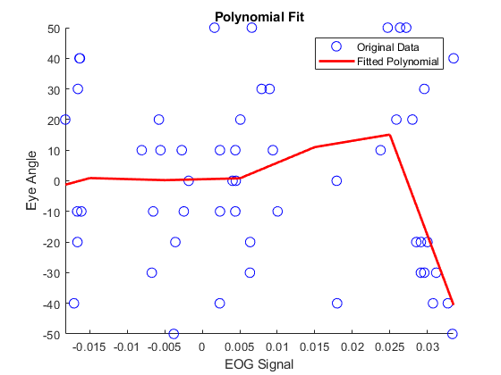
Calculate the power of the audio signal
windowLength = 1024; % Example window length audioPower = movmean(DSEOGsignal.^2, windowLength);
figure; plot(timeAxis, audioPower); xlabel('Time (s)'); ylabel('Power'); title('Audio Signal Power with Event Markers'); hold on;
% Overlay events again for context for i = 1:length(eventTimes) plot(eventTimes(i), max(audioPower), 'ro', 'MarkerSize', 8); end hold off;